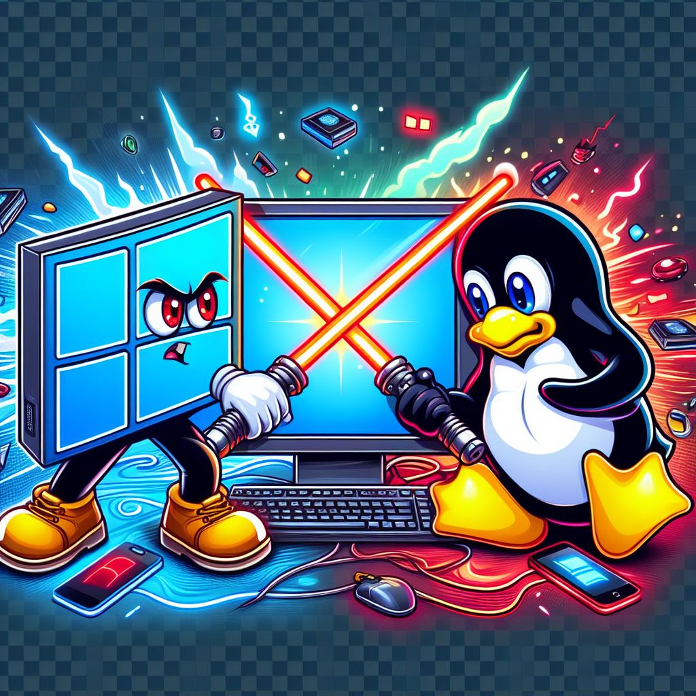

My Exploration of Linux - A Journey of Trials and Triumphs

Description: Struggle with operating systems.
Date:2024-02-25
In the early days of my tech journey, I was a teenager with a keen interest in Linux. I remember eagerly purchasing geek magazines, each edition offering different flavors of Linux and BSD to try out. My first encounter was with Mandrake Linux, a name that still brings back a wave of nostalgia.
The Initiation
The first time I attempted to install Linux, I was met with a partition screen that required resizing the Windows partition to dual boot it. As a teenager with a family computer running on Windows, this was a nerve-wracking experience. I pressed a few buttons, and suddenly, Windows was gone. It was an initiation of sorts, a trial by fire that led to my family’s dismay. However, with time, I became familiar with the process and found myself distro hopping every week.
The Evolution
Fast forward a couple of decades, I thought Linux would have evolved significantly. Unfortunately, my experience suggested otherwise. I had an embedded device that I wanted to program, and the advice I found online pointed me towards ArchLinux. I booted up ArchLinux, loaded in the partitions, and followed the lengthy instructions. However, things didn’t go as smoothly as I had hoped.
The Challenges
The main challenge was installing GRUB, the bootloader. In the old BIOS days, operating systems loaded into the master boot record. Now, there’s UEFI. Despite trying numerous tools and following various guides to modify the UEFI records to boot into ArchLinux, nothing worked.
I decided to try a few partitioning and bootloader tools in Windows, thinking I could make an entry in the Windows bootloader. I was surprised to find a plethora of free trials for partitioning, mounting, formatting, and bootloader tools online. However, none of them seemed to work as expected.
The Debian Experience
Next, I turned to Debian, touted as a stable distro. The installation process was quicker than ArchLinux, mostly automated, and even handled the UEFI entry. However, upon booting into the installed Debian, I realized my new Nvidia gaming graphics card didn’t work. This led to a kernel panic and a series of troubleshooting guides to add repositories and install proprietary drivers.
The Ubuntu Solution
Drained from the experience, I looked at Ubuntu, which seemed like the perfect click-and-go solution. However, I only had a 4GB USB drive, donated to me two decades ago. This led me down a fascinating path of exploring how USB drives were created and how to make your own. Unfortunately, I needed a Linux system to use those tools, and there were no Windows tools available.
The Last Resort
As a last resort, I decided to install WSL2 in Windows. I haven’t tried interfacing with the embedded devices yet, but I’m hopeful. In the future, I’d like to delve deeper into how bootloaders, UEFI, and USB live Linux distros work. I have a cool idea that I’d like to explore, but it requires a lot of research.
Conclusion
My exploration of Linux and Windows has been a journey filled with trials and triumphs. It’s taught me patience, perseverance, and the importance of continuous learning. Despite the challenges, I wouldn’t trade this experience for anything. It’s shaped me into the tech enthusiast I am today, always ready for the next adventure in the vast landscape of technology.